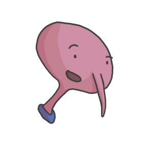

About
Learn more about Claude and Jay and what motivates them to write in this website.

Claude
"I love the indoors, why would i want to sweat it up outside?"
Likes: The cold, video games, technology, art and sarcastic jokes.

Jay
"Outside is never boring, there's always something to do!"
Likes: Music, sports, nature, bush walks and fresh food.
Referecenes
QUT image: QUT. (1989-2021). QUT Icon. https://www.qut.edu.au.
Code refrences from https://developer.mozilla.org/en-US/ and https://css-tricks.com
All other images and artworks are drawn/taken by me, Alex Ward.